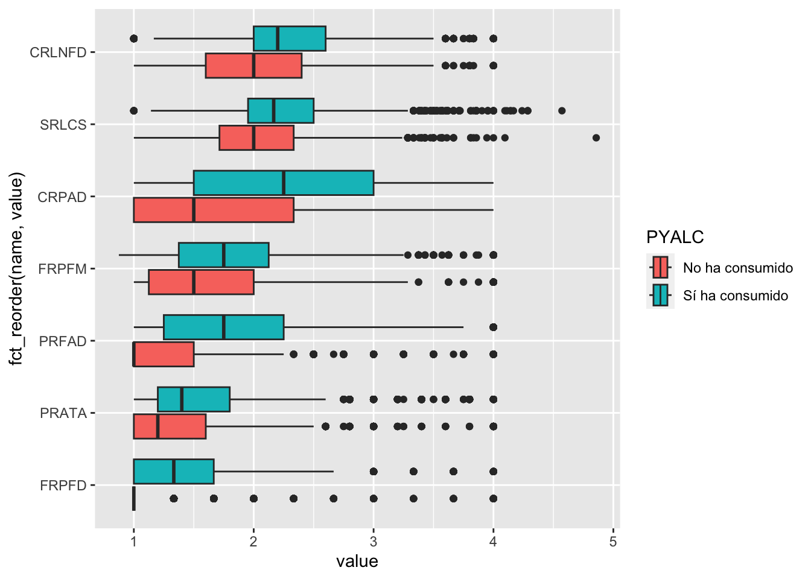
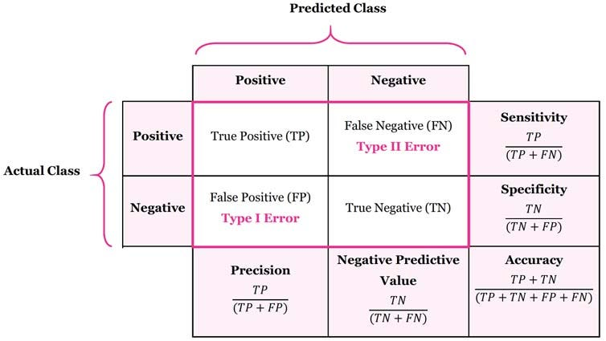

Linear Regression Model Specification (regression)
Computational engine: stan
Especificar el modelo en tidymodels
Tip
library(): cargar el paquete tidymodels.
tidymodels_prefer(): establecer el paquete tidymodels como el preferido.
linear_reg(): Crear una especificación de modelo de regresión lineal en el marco de tidymodels.
logistic_reg() : Crear una especificación de modelo de regresión logística en el marco de tidymodels.
set_engine(): establecer el motor (paquete) de cálculo del modelo. Se utilizará “lm” para el primer modelo, “glmnet” para el segundo y “stan” para el tercero.
Estimar un modelo
Estimar un modelo de regresión logística para evaluar la asociación entre el consumo de alcohol y los factores de riesgo
Descriptivos
── Attaching core tidyverse packages ──────────────────────── tidyverse 2.0.0 ──
✔ forcats 1.0.0 ✔ readr 2.1.4
✔ lubridate 1.9.3 ✔ stringr 1.5.1
── Conflicts ────────────────────────────────────────── tidyverse_conflicts() ──
✖ readr::col_factor() masks scales::col_factor()
✖ purrr::discard() masks scales::discard()
✖ dplyr::filter() masks stats::filter()
✖ stringr::fixed() masks recipes::fixed()
✖ dplyr::lag() masks stats::lag()
✖ readr::spec() masks yardstick::spec()
ℹ Use the conflicted package (<http://conflicted.r-lib.org/>) to force all conflicts to become errors
Warning: Using an external vector in selections was deprecated in tidyselect 1.1.0.
ℹ Please use `all_of()` or `any_of()` instead.
# Was:
data %>% select(factores_de_riesgo)
# Now:
data %>% select(all_of(factores_de_riesgo))
See <https://tidyselect.r-lib.org/reference/faq-external-vector.html>.
Overall (N=12507)
PYALC
No ha consumido
3647 (29.2%)
Sí ha consumido
8860 (70.8%)
CRPAD
Mean (SD)
2.13 (0.855)
Median [Min, Max]
2.00 [1.00, 4.00]
CRLNFD
Mean (SD)
2.18 (0.536)
Median [Min, Max]
2.17 [1.00, 4.00]
FRPFD
Mean (SD)
1.37 (0.484)
Median [Min, Max]
1.33 [1.00, 4.00]
FRPFM
Mean (SD)
1.73 (0.534)
Median [Min, Max]
1.75 [0.875, 4.00]
SRLCS
Mean (SD)
2.19 (0.446)
Median [Min, Max]
2.14 [1.00, 4.86]
PRFAD
Mean (SD)
1.72 (0.677)
Median [Min, Max]
1.50 [1.00, 4.00]
PRATA
Mean (SD)
1.53 (0.583)
Median [Min, Max]
1.40 [1.00, 4.00]
Calcular la tabla de descriptivos por grupo (Sí y No ha consumido)
Hacer un gráfico para ver tendencias en los factores de riesgo
mini_datos |>select(PYALC,factores_de_riesgo) |>pivot_longer(-PYALC) |>ggplot(aes(value, fct_reorder(name, value), fill = PYALC)) +geom_boxplot()

Especificar el modelo
1. Especificar el modelo
Especificar un modelo de regresión logística. Se establece el “paquete”, en este caso “glm” y opciones del paquete (la distribución de la variable de respuesta). Además, se especifica que es un problema de “classification”, debido a que la variable dependiente es categórica. Todo esto se almacena en el objeto lm_model.
Aquí se estima el modelo con la función fit(). Se especifica la variable de resultado (PYALC) y los predictores (.). Se utiliza el objeto mini_datos como base de datos.
lm_results <- lm_model |>fit(PYALC ~ ., data = mini_datos)
tidy(): Esta función se utiliza para convertir los resultados de un modelo en un marco de datos “ordenado” que muestra los coeficientes del modelo, los errores estándar, los valores t y los valores p para cada variable independiente.
glance(): Esta función se utiliza para resumir los resultados de un modelo como estadísticas globales del modelo, por ejemplo, R-cuadrado ajustado, el AIC y el BIC.
tidy(exp=TRUE, conf.int=TRUE): Esta función se utiliza para convertir los resultados de un modelo en un marco de datos “ordenado” que muestra los coeficientes del modelo, los errores estándar, los valores t y los valores p para cada variable independiente. Los argumentos exp y conf.int se utilizan para incluir los intervalos de confianza y los exponentes en los resultados
La opción strata es para que los datos de entrenamiento y prueba tengan la misma distribución de la variable PYALC
A veces la selección aleatoria de la muestra es problemática, por ejemplo cuando hay una componente de tiempo en los datos. En este caso, se puede usar la función initial_time_split().
Dividir los datos
set.seed(): establecer una semilla para la generación de números aleatorios en R. En este caso, se utiliza para establecer la semilla en 1234, lo que garantiza que los resultados sean reproducibles. Esto es especialmente importante cuando se trabaja con modelos de aprendizaje automático, ya que los resultados pueden variar según la semilla utilizada para la generación de números aleatorios.
initial_split(): dividir los datos en conjuntos de entrenamiento y prueba. Divide el objeto “mini_datos” en conjuntos de entrenamiento y prueba en una proporción de 80/20, y estratificando por la columna “PYALC”.
training(): extraer el conjunto de entrenamiento de un objeto creado con la función initial_split(). Se utiliza para extraer el conjunto de entrenamiento del objeto “datos_divididos”.
testing(): extraer el conjunto de prueba de un objeto creado con la función initial_split(). Se utiliza para extraer el conjunto de prueba del objeto “datos_divididos”.
No es necesario volver a especificar el modelo, ya que ya lo hicimos en la parte I. Pero si lo hiciéramos, sería de la siguiente manera:
lm_model <-logistic_reg() %>%set_engine("glm", family ="binomial") |>set_mode("classification")
2. Estimar el modelo
Estimar el modelo con la función fit(). Se especifica la variable de resultado (PYALC) y los predictores (.). Se utiliza el objeto datos_entrenamiento como base de datos.
lm_results <- lm_model |>fit(PYALC ~ ., data = datos_entrenamiento)
3. Obtener los resultados del modelo
Obtener los coeficientes (betas) del modelo en OR con sus intervalos de confianza.
Hay varias formas de evaluar un modelo. Algunas de las más comunes son: - Métricas de ajuste - Área bajo la curva (AUC) - Sensibilidad y especificidad - Matrices de confusión …
Dado que nuestro objevito es predecir el consumo de alcohol, vamos a utilizar las métricas que evaluen el modelo según su desempeño en la clasificación de observaciones (accuracy o exactitud).
4. Evaluar el modelo
Utilizar el modelo para predecir los valores de la variable dependiente en los datos de entrenamiento.
# A tibble: 10 × 1
.pred_class
<fct>
1 Sí ha consumido
2 No ha consumido
3 No ha consumido
4 Sí ha consumido
5 Sí ha consumido
6 Sí ha consumido
7 Sí ha consumido
8 No ha consumido
9 Sí ha consumido
10 Sí ha consumido
Obtener las predicciones en forma de probabilidades
# A tibble: 10,005 × 13
.pred_class PYALC CRPAD CRLNFD FRPFD FRPFM SRLCS PRFAD PRATA YEAR GRADE
<fct> <fct> <dbl> <dbl> <dbl> <dbl> <dbl> <dbl> <dbl> <fct> <dbl>
1 Sí ha consumido No ha… 4 2 1 1.62 1.86 1 1 2014 7
2 No ha consumido No ha… 1 2 1 2 2.17 1 1.2 2017 7
3 No ha consumido No ha… 1 2.2 1 1.25 1.6 1 1.2 2017 6
4 Sí ha consumido No ha… 1 1.67 1 1.12 2.43 1.5 1.2 2012… 9
5 Sí ha consumido No ha… 3.75 2.33 1 2 2.43 1.25 1 2014 8
6 Sí ha consumido No ha… 3.25 1.67 1.33 1.62 1.86 1.5 1.2 2014 7
7 Sí ha consumido No ha… 1.75 1.8 2 2 1.67 2 2 2017 11
8 No ha consumido No ha… 1 3.4 1 4 1.83 1 1 2017 6
9 Sí ha consumido No ha… 2.75 2.17 1 1.5 3.29 1 1.2 2014 6
10 Sí ha consumido No ha… 1 1.8 1 2.29 1.86 1.75 1 2014 8
# ℹ 9,995 more rows
# ℹ 2 more variables: GENDER <fct>, AGE <dbl>
Métricas
Métricas
Exactitud (accuracy): Es una métrica que mide la proporción de predicciones correctas realizadas por un modelo en comparación con el total de predicciones realizadas. Es decir, la cantidad de veces que el modelo acertó sobre el total de datos que se le presentaron.
Sensibilidad (sensitivity/recall): Es la proporción de verdaderos positivos (TP) que son identificados correctamente por el modelo en relación con el total de verdaderos positivos y falsos negativos (FN). La sensibilidad mide la capacidad del modelo para detectar correctamente los casos positivos.
Especificidad (Specificity): Es la proporción de verdaderos negativos (TN) que son identificados correctamente por el modelo en relación con el total de verdaderos negativos y falsos positivos (FP). La especificidad mide la capacidad del modelo para detectar correctamente los casos negativos.
Métricas
Precision (Precisión): Es la proporción de verdaderos positivos (TP) que son identificados correctamente por el modelo en relación con el total de verdaderos positivos y falsos positivos (FP). La precisión mide la capacidad del modelo para no identificar falsamente un caso como positivo.
F-measure (Puntuación F): Es una métrica que combina la precisión y el recall en una sola puntuación. El valor de la F-measure oscila entre 0 y 1, siendo 1 el valor óptimo.
Kappa (Coeficiente Kappa): Es una medida de concordancia que compara la cantidad de acuerdos observados entre el modelo y las observaciones reales con la cantidad de acuerdos que se esperarían por casualidad. Un valor de kappa cercano a 1 indica una concordancia casi perfecta entre el modelo y las observaciones reales.
Métricas

Calcular las métricas
Con los datos observados y los predichos, se pueden calcular las métricas del modelo.
conf_mat(resultados_prueba, truth = PYALC,estimate = .pred_class)
Truth
Prediction No ha consumido Sí ha consumido
No ha consumido 1394 730
Sí ha consumido 1523 6358
accuracy(resultados_prueba, truth = PYALC,estimate = .pred_class)
El área bajo la curva (AUC) es una métrica que mide la capacidad de un modelo para distinguir entre dos clases. En el caso de un modelo de regresión logística, el AUC mide la capacidad del modelo para distinguir entre los que han consumido alcohol y los que no.
prediccion_auc <-predict(lm_results, entrenamiento, type ="prob")resultados_prueba_auc <-cbind(prediccion_auc, datos_entrenamiento) |>tibble()roc_auc(resultados_prueba_auc,truth = PYALC,`.pred_Sí ha consumido`,event_level ="second")